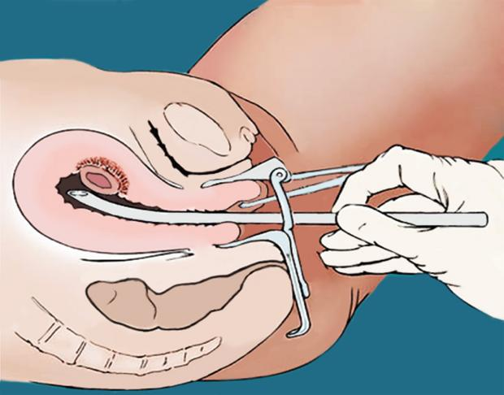

Se denomina aborto quirúrgico al conjunto de técnicas quirúrgicas que tienen el fin de provocar un aborto inducido o interrupción voluntaria del embarazo.
La interrupción voluntaria del embarazo también se puede realizar, hasta las primeras 8 o 9 semanas por aborto con medicamentos o químico (utilizando medicamentos como la mifepristona y el misoprostol).
Es un procedimiento para terminar un embarazo no deseado por medio de la extracción del feto y la placenta del útero (matriz) de la madre.
El aborto quirúrgico no es lo mismo que el aborto espontáneo. Este último es cuando un embarazo termina por sí solo antes de la semana 20 del embarazo.
En un aborto quirúrgico, se utiliza una ventosa obstétrica para extraer el feto y el material conexo del útero (matriz) de la madre. El procedimiento por lo regular se hace después de 6 semanas del último período menstrual de la mujer. A usted se le puede dar un medicamento (sedante) para ayudarla a relajarse y sentir sueño. El médico puede anestesiar el cuello uterino, de manera que usted sienta poco dolor durante el procedimiento. Si el aborto quirúrgico se practica después de 12 semanas de embarazo, el médico primero tiene que abrir o dilatar el canal cervical. Se colocan pequeños tallos, llamados laminaria, dentro del cuello uterino para ayudarlo a abrirse. Algunas veces, esto se hace uno o dos días antes del procedimiento de aborto real. Luego, el médico coloca un tubo hueco dentro del útero antes de utilizar la ventosa para extraer de allí los tejidos relacionados con el embarazo. Se pueden administrar medicamentos para ayudar a que los músculos uterinos se contraigan, lo cual reduce el sangrado.
El aborto en Colombia fue despenalizado mediante una --demanda de in constitucionalidad interpuesta por la doctora y abogada Mónica Roa ante la Corte Constitucional. Durante varios grupos feministas y mujeres activistas por los derechos sexuales y reproductivos como María Ladi Londoño, y la francesa Florence Thomas entre otras, lucharon para poder despenalizar el aborto en Colombia como un caso de justicia social, estas luchas se dieron mediante el Congreso de la República de esta forma poder legislar leyes a favor de las mujeres, muchas de estas promotoras fueron mujeres que abortaron pero fracasaron en varios intentos. Gracias a la llegada de la abogada Mónica Roa con un proyecto de alto litigio para la despenalización del aborto en Colombia, apoyado por Women's Link Worldwide. Finalmente por medio de la Corte Constitucional de Colombia y con gran apoyo de varios grupos de mujeres y Organizaciones no Gubernamentales publicó la carta de inconstitucionalidad mencionando que la penalización total del aborto en Colombia es injusto y por ende las tasas de aborto inseguros y clandestinos eran mayores y a causa muchas mujeres morían o quedaban heridas de por vida por procedimientos inseguros al abortar, sabiendo que el aborto es un procedimiento mucho más seguro que el parto natural, causando así una crisis de salud pública nacional. Hasta el 2006 que la corte sentenció la Sentencia de la Corte Constitucional Colombiana C-355 de 10 de mayo de 2006, a raíz del caso de Martha Sulay González, se permite abortar legalmente en tres situaciones específicas:
''...no se incurre en delito de aborto, cuando con la voluntad de la mujer, la interrupción del embarazo se produzca en los siguientes casos: (I) Cuando la continuación del embarazo constituya peligro para la vida o la salud física o mental de la mujer, certificada por un médico; (II) Cuando exista grave malformación del feto que haga inviable su vida, certificada por un médico; y, (III) Cuando el embarazo sea el resultado de una conducta, debidamente denunciada, constitutiva de acceso carnal o acto sexual sin consentimiento, abusivo o de inseminación artificial o transferencia de óvulo fecundado no consentidas, o de incesto.''